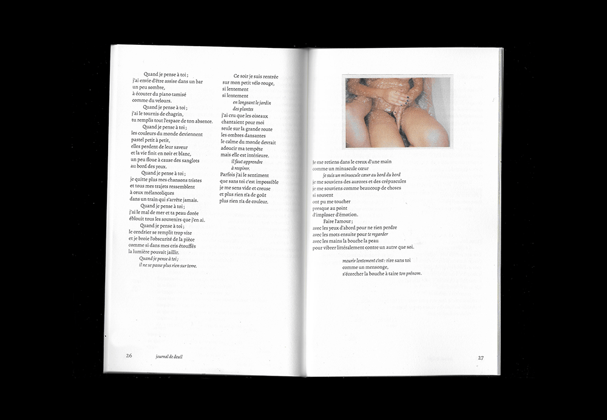
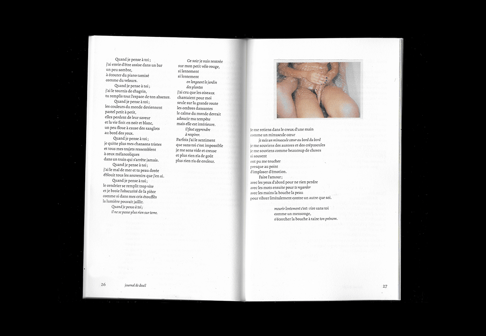
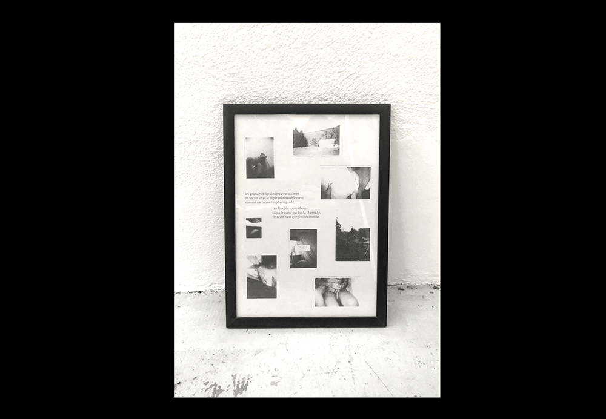
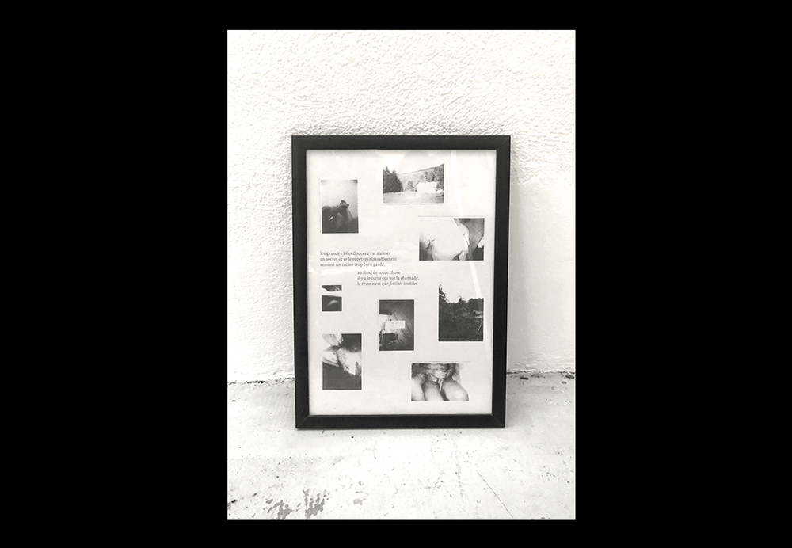

Journal de Deuil
Mise en page du recueil de poèmes Journal de Deuil,
écrit et auto-édité par Suzanne Rivère.
L'édition est enrichie d'une affiche, imprimée en risographie qui regroupe les photographies personnelles de Suzanne.
Édition de 40 pages, 130 x 210 mm, imprimée à la Manufacture Deux Ponts, en décembre 2020.
Affiche imprimée en 60 exemplaires par Camille Moreau.

 



 
